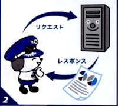
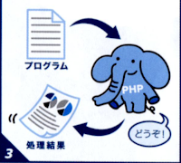

PHPを使ったWebアプリケーション
Webアプリケーションの世界にようこそ！PHPでWebアプリケーションを作成する方法を学ぶためにまず、PHPが動く舞台であるインターネットやサーバの働きについて確認します。Webアプリケーションは多くの技術の結晶なので、周辺技術を知ることで理解が深まります！
インターネットを通じて利用できるアプリケーションをWebアプリケーションといいます。

インターネットでは、リクエスト（要求）に応じてサーバがレスポンス（応答）を返します。

サーバは、PHP実行エンジンでプログラムを実行し、処理結果を返しています。
まずはPHPの背景にあるインターネットの世界を見てみましょう。